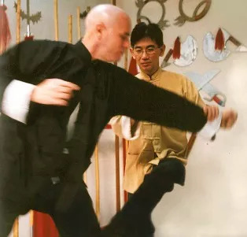

Lap Sau
Por Thomas Pinheiro
Sobre a técnica de lap, muito interessante observar seu uso no wing chun, pois muitos utilizam-a como método de treino; porém, o que passa desapercebido é sua real intenção. Inicialmente, alguns “praticantes de wing chun” sequer sabem que lap significa um controle puxando, e que não é uma técnica pertinente a um estilo apenas de kung fu, a maioria dos estilos chineses utilizam-se deste movimento; porém eternizou-se no wing chun devido a filmes do Bruce Lee, onde ele sempre destacava este movimento em suas coreografias.
Talvez daí tanto se fale em lap sau. O lap pode ser um movimento composto de apenas um braço como com dois braços simultâneos, atacando com o mesmo braço ou o outro, controlando o adversário e combinando com ataque, de braço, cotovelo, joelho, ombro, chute. A técnica de lap possui inúmeras variações de conclusão, com ataque lateral, lateral baixo, soco do machado, fak sau, pak da, etc... mas tem detalhes específicos de como executa-la, em relação à mão, e no momento certo utilizando-se da força do oponente.
Apesar disso torna-se em sua aplicação real nem sempre confiável quando não se está colado ao oponente, pois em situação real, a velocidade de um ataque é muito rápido e exige muita destreza em realizar o primeiro toque de contato, para então colado tracionar o braço do adversário. Também quando se procura maior velocidade ocorre ataque com a mesma mão que executou o lap.
Quando bem aplicado fica difícil de sair, mas como todo ataque, também tem como neutralizar, utilizando-se de sensibilidade ao toque da mão do lap, quebrando rapidamente o dito ataque de lap sau. Então porque é muito comum em escolas de wing chun que se utilizam exercício de bong lap sau? A resposta está em ralação ao exercício de bong lap sau treinado seguidamente com variações que possam estimular ao praticante o senso de movimentar-se agressivo no ataque com sequências, senso de defesa, e sensibilidade.
quando treinado baseado nas combinações, torna-se um exercício em que o movimento de aplicação foge da realidade, tornando-se mecânico, e impedindo a criatividade e permite que o parceiro de treino ao utilizar-se de um simples movimento de controle em resposta ao próprio lap, desmontar toda a sequência, não dando chance para o outro aplicar o lap sau após o bong.
Neste sentido “eu vejo” muito mais funcionabilidade utilizar-se do desenvolvimento dos elementos da agressividade, da defesa, da sensibilidade através do lap em outras formas de treino, sem necessariamente prender-se ao exercício de bong lap sau, que acaba também conduzindo um aluno inexperiente a aumentar a tensão nos ombros, perdendo a movimentação continua de um bong sau de deslize para um ataque (principio em siu lim tau), sendo as combinações de muito maior proveito em outro tipo de exercício de parceiro, como o chi sau, onde em nível mais elevado, o grande número de variações impede a mecanicidade ou previsão do ataque ou defesa.
Quando o bong sau é praticado com o principío de chum kiu, se quer há possibilidade de sequencialmente utilizar o lap sau. A experiência de ensinar, de saber o que quer desenvolver em seu aluno e também que métodos escolher para o melhor aproveitamento de uma determinada técnica contam muito, mas sempre serão “opção” e “gosto” de quem ensina.
Wing Chun pode se desdobrar em milhares de exercícios para treinar, o problema é saber qual nível dos resultados satisfatórios são obtidos e qual a possibilidade de entendimento da técnica pelo aluno.